Roteiro de testes humanos · Jogo de Prompts 8-bit
Workshop de Prompts · funcionalidade descrita em .scratch/workshop-game/spec.md
Versão testada: branch feat/placar-conquistas-reveal, commit 4430dbe · Data: 13/10/2026
1. Visão geral e papéis
O Jogo de Prompts é uma aplicação em tempo real para um workshop. Cada Jogador entra com um Nickname e escreve prompts numa janela PROMPT.EXE. O Facilitador conduz o workshop: abre Rodadas com um Desafio, encerra, remove Jogadores e projeta o Telão.
Cada Tentativa recebe uma Nota de 0 a 100 calculada sem nenhuma LLM, a partir de seis Critérios: Papel (15), Contexto (20), Tarefa (20), Formato (20), Restrições (15) e Exemplos (10).
Facilitador um por workshop
Entra com PIN, abre e encerra Rodadas, vê quem já enviou, remove Jogadores, reseta a Sala e projeta o Telão.
Jogador muitos
Entra com Nickname, escreve prompts na PROMPT.EXE, lê a Nota e o checklist, acompanha o Placar e o reveal.
2. Preparação: como rodar e como simular vários Jogadores
2.1 Subir a aplicação
pnpm install cp .env.example .env # defina FACILITADOR_PIN (não use o valor de exemplo) pnpm db:deploy # aplica as migrações do SQLite pnpm dev # Next + Socket.IO em http://localhost:3000
Use pnpm start (com pnpm build antes) para um teste com a versão de produção. O banco fica no arquivo indicado em DATABASE_URL e sobrevive a restarts.
2.2 Simular vários Jogadores num único computador
O token do Jogador fica no localStorage do navegador, por endereço. Abas do mesmo endereço compartilham o mesmo Jogador. Para ter quatro Jogadores ao mesmo tempo, abra cada um num endereço diferente do mesmo servidor:
| Jogador | Endereço (exemplo com a porta 3000) |
|---|---|
| Joao | http://localhost:3000/ |
| Lucas | http://127.0.0.1:3000/ |
| Pedro | http://[::1]:3000/ |
| Maria | http://127.0.0.2:3000/ |
| Facilitador | http://localhost:3000/facilitador e o Telão em /facilitador/telao |
No modo pnpm dev, o Next bloqueia recursos de desenvolvimento vindos de endereços fora de allowedDevOrigins. Se a tela ficar parada em CARREGANDO... num endereço como 127.0.0.1, esse é o motivo (veja o achado 3). A forma mais simples de evitar é usar só localhost ou rodar em produção.
Em um workshop de verdade, cada participante usa o próprio aparelho e o endereço da rede local. Esse truque serve só para o teste.
3. Manual do Facilitador
3.1 Entrar no painel Facilitador
- Abra
/facilitador. Aparece a tela do PIN (captura 03). - Digite o PIN e clique em ENTRAR. Um PIN errado mostra "PIN incorreto." e não entra.
- A sessão dura 12 horas. Reiniciar o servidor exige o PIN de novo.
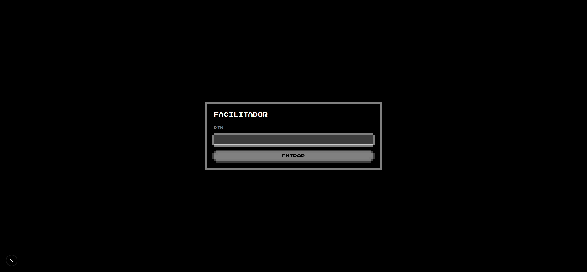
3.2 Conhecer o painel
O painel tem, de cima para baixo: o estado da Rodada (aberta ou não, quantos já enviaram e o botão ENCERRAR RODADA); o campo de cronômetro opcional; a lista de DESAFIOS, cada um marcado como DISPONÍVEL ou JOGADO; a lista de JOGADORES com REMOVER; e a área REINICIAR A SALA.
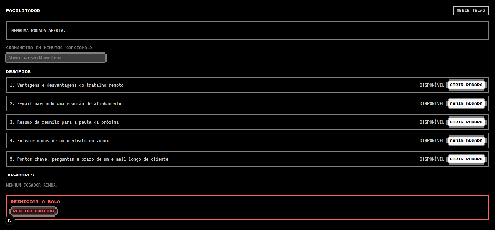
3.3 Abrir uma Rodada Facilitador
- Se quiser cronômetro, digite os minutos no campo CRONÔMETRO EM MINUTOS (OPCIONAL). Vazio significa sem prazo. Só valem números inteiros de 1 ou mais.
- Clique em ABRIR RODADA no Desafio escolhido. Um Desafio já jogado fica com o botão desativado.
- O campo do cronômetro volta a ficar vazio: ele vale só para a Rodada que acabou de abrir.
- Cada Desafio pode ser jogado uma vez por partida. Para repetir um, é preciso resetar a Sala.
- Com uma Rodada aberta, os outros botões ABRIR RODADA ficam desativados.
Os jogadores veem o cenário em DESAFIO.TXT assim que a Rodada abre.
3.4 Acompanhar e encerrar Facilitador
- O contador "N jogadores já enviaram" atualiza a cada envio aceito. Use isso para decidir quando encerrar.
- Clique em ENCERRAR RODADA a qualquer momento. Ela também encerra sozinha quando o cronômetro zera. Nesse caso não é preciso fazer nada.
- Ao encerrar, todos os Jogadores veem o reveal: o Prompt de referência e o top 3 com Avatar, Nickname, Nota e prompt. Os envios ficam bloqueados.
- O reveal continua até o Facilitador abrir a próxima Rodada.
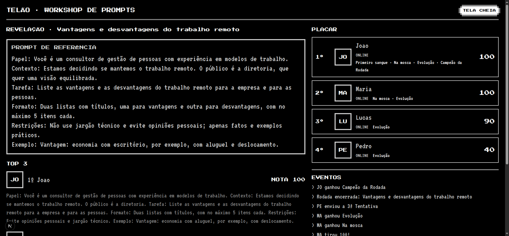
3.5 Projetar o Telão Facilitador
- Clique em ABRIR TELÃO no painel (abre
/facilitador/telaoem outra aba). Depois clique em TELA CHEIA. - O Telão mostra: o Desafio da Rodada aberta com o cenário, o cronômetro (TEMPO) e a contagem de envios (ENVIARAM); no lado direito, o Placar e o feed de eventos.
- Depois de encerrar, o Telão mostra o reveal com o Prompt de referência e o top 3, para discutir com a turma.
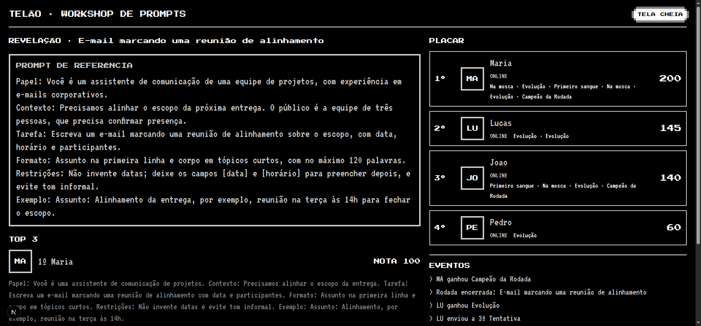
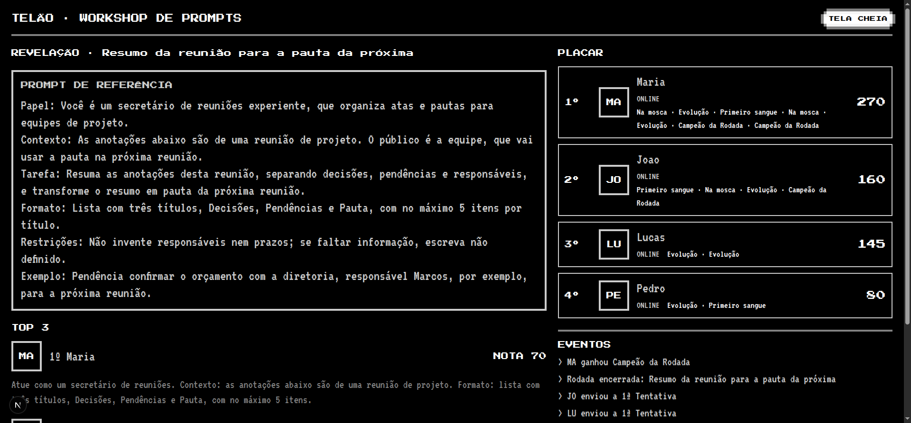
3.6 Remover um Jogador Facilitador
- Na lista JOGADORES, clique em REMOVER ao lado do nome.
- O Jogador sai do Placar, as Tentativas e Conquistas dele são apagadas e o Nickname fica livre.
- A tela dele volta ao login (captura 12). Ele pode entrar de novo com o mesmo Nickname, começando do zero.
3.7 Reiniciar a Sala Facilitador
- Em REINICIAR A SALA, clique em RESETAR PARTIDA.
- Leia o aviso e confirme com SIM, APAGAR TUDO. Cancelar desfaz a ação. Não há volta.
- Tudo é apagado: Jogadores, Rodadas, Tentativas e Conquistas. Os Desafios voltam a
DISPONÍVEL, e todos os Jogadores voltam ao login.
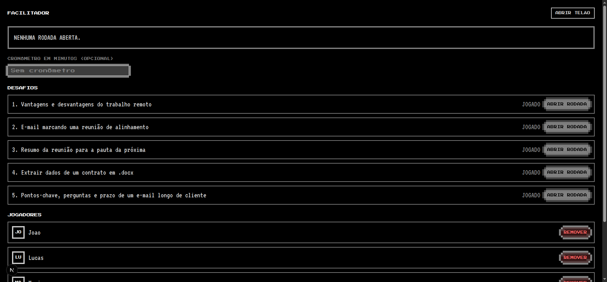
4. Manual do Jogador
4.1 Entrar com um Nickname Jogador
- Abra o endereço do workshop. Digite um Nickname.
- Enquanto digita, o preview do Avatar mostra as duas primeiras letras, sem acento e em maiúsculo: "Élio" vira
EL; "Joao" viraJO. - Clique em ENTRAR.
Regras do Nickname: de 2 a 16 caracteres (sem contar espaços nas pontas); apenas letras (com acento), números e espaço; pelo menos 2 letras ou números. "joão" e "JOAO" são o mesmo Nickname.
| Se digitar | A mensagem é |
|---|---|
A | O Nickname precisa ter pelo menos 2 caracteres. |
| um nome com mais de 16 caracteres | O Nickname pode ter no máximo 16 caracteres. |
Ana@ | Use apenas letras, números e espaços. |
JOÃO, quando Joao já existe | Nickname já em uso |
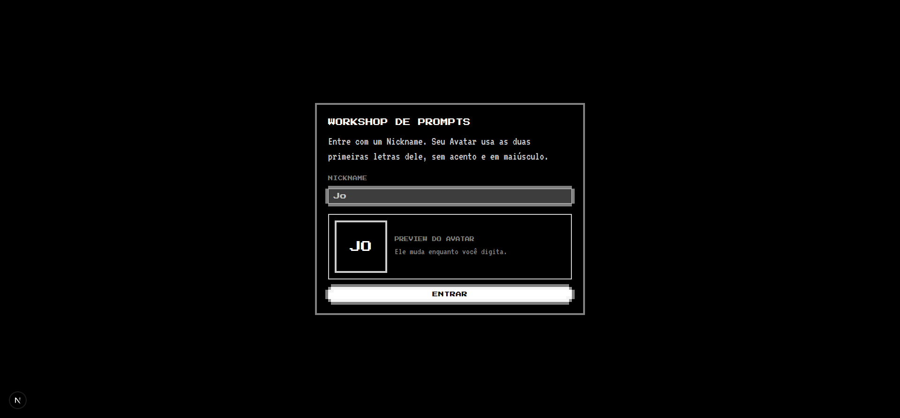
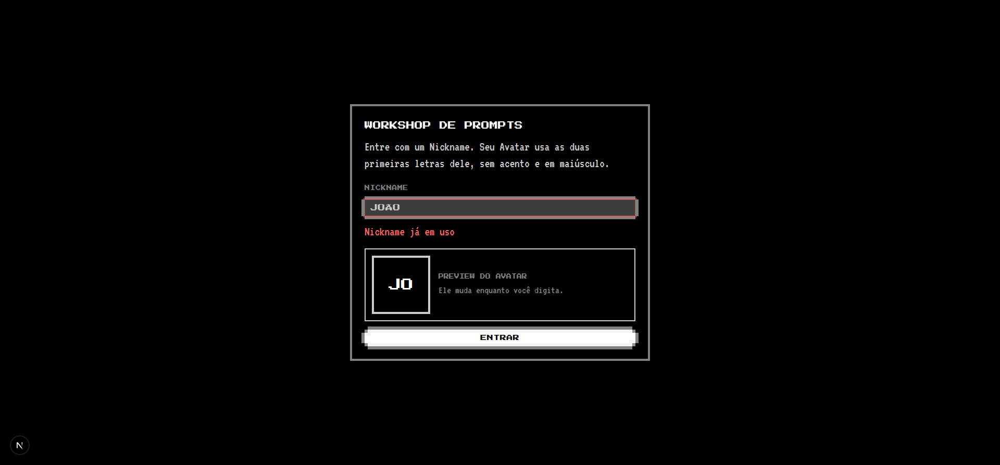
Ao recarregar a página ou fechar e reabrir a aba no mesmo navegador, você volta automaticamente ao seu Jogador, com as Tentativas e a posição no Placar.
4.2 Área de trabalho Jogador
A área tem três janelas: DESAFIO.TXT (cenário), PLACAR.EXE (ranking e feed) e PROMPT.EXE (onde você escreve). Arraste pela barra de título, minimize com _ e restaure pela barra de tarefas embaixo. A posição fica salva no seu navegador.
Enquanto não há Rodada aberta, a PROMPT.EXE mostra AGUARDANDO O FACILITADOR... com o cursor piscando.
O botão SOM no topo começa desligado. Clique para ligar os efeitos 8-bit.
Atenção: no layout padrão, a PROMPT.EXE cobre a DESAFIO.TXT. Para ler o cenário, minimize a PROMPT.EXE ou arraste a DESAFIO.TXT para fora. Veja o achado 2.
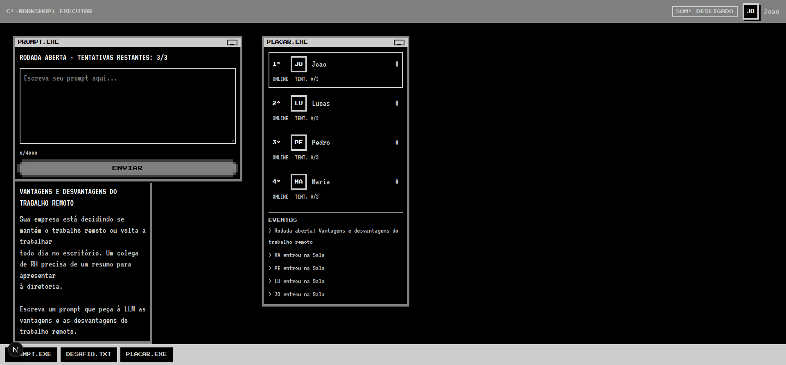
4.3 Escrever e enviar uma Tentativa Jogador
- Leia o cenário em
DESAFIO.TXT. - Escreva o prompt no campo livre da
PROMPT.EXE. Não há formulário com campos: você escreve do seu jeito. - Confira o contador
n/4000, o número de Tentativas restantes e o cronômetro (se houver). - Clique em ENVIAR. O botão só fica ativo com texto e dentro do limite de caracteres.
- A resposta aparece na hora: TENTATIVA n · NOTA x, o veredito e o checklist.
Regras que você vai notar:
- Até 3 Tentativas por Rodada. A recusa por texto vazio ou com mais de 4.000 caracteres não gasta Tentativa.
- Depois da 3ª Tentativa, o campo fica bloqueado com "Você já usou as 3 Tentativas desta Rodada."
- Quando o Facilitador encerra a Rodada (ou o tempo acaba), o campo some e o envio fica bloqueado, mesmo que você estivesse digitando.
- Depois de um envio aceito, o campo é limpo. Depois de uma recusa, o texto fica para você corrigir.
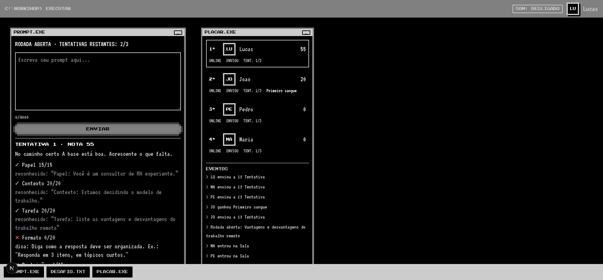
4.4 Entender o checklist e a Nota Jogador
| Nota | Veredito |
|---|---|
| 100 | Na mosca! Prompt perfeito. Estrutura completa. |
| 80 a 99 | Quase lá. Falta pouco. Veja as dicas dos Critérios que faltaram. |
| 50 a 79 | No caminho certo. A base está boa. Acrescente o que falta. |
| abaixo de 50 | Longe do alvo. Ainda faltam partes importantes na estrutura do prompt. |
Cada Critério conta tudo ou nada. Ele é reconhecido por rótulo (Papel:, ## Contexto, <restricoes>) ou por frase natural ("Atue como…", "Responda em…", "You are…"). O conteúdo precisa ter pelo menos 4 palavras: um rótulo vazio não pontua. O prompt também precisa falar do assunto do Desafio, senão a Tarefa não conta.
| Critério | Pontos | Exemplo de palavra que reconhece |
|---|---|---|
| Papel | 15 | "Você é…", "Atue como…", Papel:, "You are" |
| Contexto | 20 | Contexto:, "Estamos…", "O público é…", "For the team" |
| Tarefa | 20 | Verbo no imperativo (liste, escreva, resuma, extraia…) e pelo menos 2 grupos de Palavras-chave do Desafio |
| Formato | 20 | "formato", "tópicos", tabela, JSON, "3 itens", "no máximo 120 palavras" |
| Restrições | 15 | "Não use…", "evite…", "apenas…", "no máximo…", "don't" |
| Exemplos | 10 | "por exemplo", Exemplo:, trecho entre aspas |
4.5 Histórico, Placar e Conquistas Jogador
- O histórico da Rodada lista suas Tentativas com prompt e Nota, para você comparar versões.
- O PLACAR.EXE mostra todos os Jogadores com posição, Avatar, Nickname, pontuação total,
ONLINE/OFFLINE,ENVIOU,TENT. n/3e as Conquistas. - A pontuação total é a soma, por Rodada, da melhor Nota. Só suas melhores Tentativas contam. Empate: menos Tentativas usadas e, depois, quem atingiu a pontuação antes.
- O feed de EVENTOS mostra o que acontece na Sala, sem texto de prompt: "JO tirou 100!", "MA enviou a 2ª Tentativa", "PE ganhou Primeiro sangue".
- LEVEL UP! aparece quando sua Nota melhora na Rodada ou quando você sobe no Placar.
| Conquista | Como ganhar |
|---|---|
| Na mosca | Tirar 100 em uma Tentativa. |
| De primeira | Tirar 100 já na 1ª Tentativa da Rodada. |
| Primeiro sangue | Ser o primeiro envio aceito da Rodada. |
| Evolução | Uma Tentativa sua fica pelo menos 30 pontos acima da sua 1ª Tentativa da Rodada. |
| Campeão da Rodada | Ficar em 1º lugar da Rodada com Nota acima de zero, quando o Facilitador encerra. |
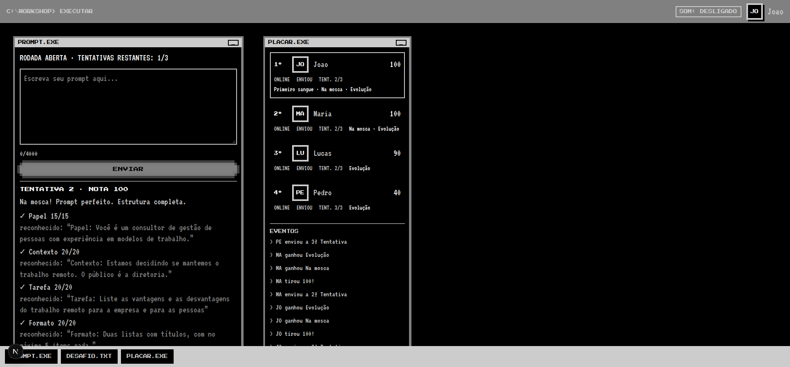
4.6 Revelação no fim da Rodada Jogador
Quando a Rodada encerra, sua PROMPT.EXE mostra o REVELAÇÃO: o Prompt de referência do Desafio e o top 3, com Avatar, Nickname, Nota e prompt de cada um. Esse reveal fica até o Facilitador abrir a próxima Rodada.
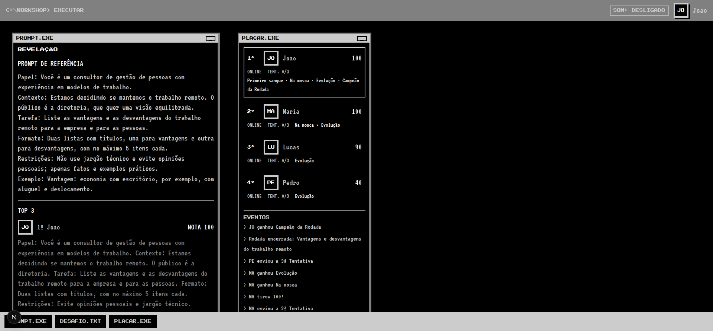
5. Roteiro de execução: cinco Rodadas, quatro Jogadores
Este é o roteiro que foi executado. Um testador pode repetir a sequência com Joao, Lucas, Pedro e Maria e comparar as Notas com as da tabela. A ordem importa: o Primeiro sangue e o desempate dependem dela.
Papel/Contexto/Tarefa/Formato/Restrições/Exemplos.
Rodada 1 · Desafio 1 · Vantagens e desvantagens do trabalho remoto (sem cronômetro)
| # | Jogador | Prompt (texto para copiar) | Nota esperada | Critérios (P/C/T/F/R/E) |
|---|---|---|---|---|
| 1 | Joao | (enviar em branco; ENVIAR deve ficar desativado) | — | não consome Tentativa |
| 2 | Joao | Liste as vantagens e desvantagens do trabalho remoto. | 20 | 0/0/20/0/0/0 |
| 3 | Pedro | Escreva um texto sobre home office. | 0 | 0/0/0/0/0/0 (só 1 grupo de palavras-chave) |
| 4 | Maria | Papel: x. Contexto: x. Tarefa: x. Formato: x. Restrições: x. Exemplo: x. | 0 | rótulos sem conteúdo não pontuam |
| 5 | Lucas | Papel: Você é um consultor de RH experiente. Contexto: Estamos decidindo o modelo de trabalho. Tarefa: liste as vantagens e desvantagens do trabalho remoto. | 55 | 15/20/20/0/0/0 |
| 6 | Pedro | Liste as vantagens e as desvantagens do trabalho remoto em tópicos. | 40 | 0/0/20/20/0/0 · Evolução (40 ≥ 0 + 30) |
| 7 | Lucas | Papel: Você é um consultor de RH experiente. Contexto: Estamos decidindo o modelo de trabalho. Tarefa: liste as vantagens e desvantagens do trabalho remoto. Formato: lista com 2 títulos, no máximo 5 itens cada. Restrições: não use jargão técnico. | 90 | 15/20/20/20/15/0 · Evolução (90 ≥ 55 + 30) |
| 8 | Joao | Papel: Você é um consultor de gestão de pessoas com experiência em modelos de trabalho. Contexto: Estamos decidindo se mantemos o trabalho remoto. O público é a diretoria. Tarefa: Liste as vantagens e as desvantagens do trabalho remoto para a empresa e para as pessoas. Formato: Duas listas com títulos, com no máximo 5 itens cada. Restrições: Evite opiniões pessoais e jargão técnico. Exemplo: Vantagem: economia com aluguel, por exemplo, com deslocamento. | 100 | 15/20/20/20/15/10 · Na mosca · Evolução |
| 9 | Maria | You are an experienced HR consultant. Context: we are deciding on remote work. Task: list the advantages and disadvantages of remote work. Format: two bulleted lists with short items. Don't use technical jargon in the answer. For example, a bullet: pro, lower rent. | 100 | 15/20/20/20/15/10 · Na mosca · Evolução (texto em inglês) |
| 10 | Pedro | Liste as vantagens e desvantagens do trabalho remoto. | 20 | 0/0/20/0/0/0 (3ª Tentativa; a melhor continua 40) |
| 11 | Pedro | (4ª Tentativa, qualquer texto) | recusado | "Você já usou as 3 Tentativas desta Rodada." |
Ao encerrar a Rodada 1: Joao em 1º (campeão da Rodada). Maria também tirou 100, mas Joao chegou ao 100 antes. Top 3 do reveal: Joao 100, Maria 100, Lucas 90. Depois de encerrada, o envio de qualquer Jogador deve ser recusado com "A Rodada foi encerrada.", e o Desafio 1 não pode ser reaberto: "Este Desafio já foi jogado nesta Sala."
Rodada 2 · Desafio 2 · E-mail marcando uma reunião de alinhamento (sem cronômetro)
| # | Jogador | Prompt (texto para copiar) | Nota esperada | Critérios |
|---|---|---|---|---|
| 1 | Maria | Escreva um e-mail para a equipe marcando uma reunião de alinhamento com data e participantes. | 40 | 0/20/20/0/0/0 · Primeiro sangue |
| 2 | Pedro | Escreva um texto curto. | 0 | 0/0/0/0/0/0 |
| 3 | Joao | Escreva um e-mail sobre a reunião. | 20 | 0/0/20/0/0/0 |
| 4 | Lucas | Escreva um e-mail marcando uma reunião de alinhamento. | 20 | 0/0/20/0/0/0 |
| 5 | Maria | Papel: Você é uma assistente de comunicação de projetos. Contexto: Precisamos alinhar o escopo da entrega. Tarefa: Escreva um e-mail marcando uma reunião de alinhamento com data e participantes. Formato: Assunto na primeira linha e corpo em tópicos curtos. Restrições: Não invente datas e evite tom informal. Exemplo: Assunto: Alinhamento, por exemplo, reunião na terça às 14h. | 100 | 15/20/20/20/15/10 · Na mosca · Evolução (100 ≥ 40 + 30) |
| 6 | Pedro | Escreva um e-mail marcando uma reunião de alinhamento. | 20 | 0/0/20/0/0/0 (sem Evolução: 20 < 0 + 30) |
| 7 | Lucas | Papel: Você é um coordenador de projetos. Tarefa: escreva um e-mail marcando uma reunião de alinhamento com data e participantes. | 35 | 15/0/20/0/0/0 (sem Evolução: 35 < 20 + 30) |
| 8 | Joao | Escreva um e-mail para o time marcando uma reunião de alinhamento com data e participantes. | 40 | 0/20/20/0/0/0 (sem Evolução: 40 < 20 + 30) |
| 9 | Lucas | Escreva um e-mail marcando uma reunião de alinhamento com data, horário e participantes, em no máximo 80 palavras. | 55 | 0/0/20/20/15/0 · Evolução (55 ≥ 20 + 30) |
Ao encerrar a Rodada 2: Top 3 do reveal: Maria 100, Lucas 55, Joao 40. Campeão da Rodada: Maria.
Rodada 3 · Desafio 3 · Resumo da reunião (cronômetro de 1 minuto)
| # | Jogador | Prompt (texto para copiar) | Nota esperada | Critérios |
|---|---|---|---|---|
| 1 | Pedro | Resuma as anotações da reunião em decisões, pendências e responsáveis, e transforme em pauta. | 20 | 0/0/20/0/0/0 · Primeiro sangue |
| 2 | Maria | Atue como um secretário de reuniões. Contexto: as anotações abaixo são de uma reunião de projeto. Formato: lista com três títulos, Decisões, Pendências e Pauta, com no máximo 5 itens. | 70 | 15/20/0/20/15/0 · "no máximo" conta em Formato e em Restrições |
| 3 | Lucas | Escreva um resumo da reunião. | 0 | só o grupo "resumo" (1 grupo) |
| 4 | Joao | Crie um resumo das anotações. | 20 | 0/0/20/0/0/0 |
Cronômetro: o campo mostra TEMPO: 00:55 logo depois da abertura. Sem envio depois do zero, a Rodada deve encerrar sozinha. Um envio do Joao depois disso deve ser recusado com "A Rodada foi encerrada."
Ao encerrar a Rodada 3: Top 3: Maria 70, Pedro 20, Joao 20. O empate fica com quem enviou antes (Pedro).
Rodada 4 · Desafio 4 · Extrair dados de um contrato em JSON (sem cronômetro)
| # | Jogador | Prompt (texto para copiar) | Nota esperada | Critérios |
|---|---|---|---|---|
| 1 | Lucas | Extraia dados do contrato em JSON. | 40 | 0/0/20/20/0/0 · Primeiro sangue |
| 2 | Joao | Papel: Você é um analista de dados. Contexto: O documento é um contrato em .docx da empresa. Tarefa: Extraia os campos contratante, contratado, valor, vigência e multa do contrato. Formato: JSON com as chaves contratante, contratado, valor, vigência e multa. Restrições: Não invente dados nem valores. | 90 | 15/20/20/20/15/0 · Quase lá |
Rodada 5 · Desafio 5 · Pontos-chave de um e-mail de cliente (sem cronômetro)
| # | Jogador | Prompt (texto para copiar) | Nota esperada | Critérios |
|---|---|---|---|---|
| 1 | Pedro | (enviar em branco, depois um texto de mais de 4.000 caracteres) | recusado | não consome Tentativa |
| 2 | Pedro | Extraia os pontos-chave, as perguntas e o prazo do e-mail do cliente, em tópicos. | 40 | 0/0/20/20/0/0 · Campeão da Rodada |
Presença: feche a aba do Lucas e espere alguns segundos. Ele deve aparecer como OFFLINE no Placar, com os 185 pontos. Ao voltar, deve aparecer ONLINE de novo.
Moderação e reset
- Remova o Pedro pelo painel. Ele deve sair do Placar e voltar ao login (captura 12).
- Entre de novo com
Pedro: o Nickname está livre. O novo Pedro começa com 0 pontos e sem Conquistas. - Resete a Sala (captura 13). Os cinco Desafios voltam a
DISPONÍVEL, e todos os Jogadores voltam ao login.
Placar esperado ao longo do workshop
| Depois de | 1º | 2º | 3º | 4º |
|---|---|---|---|---|
| Rodada 1 | Joao 100 | Maria 100 | Lucas 90 | Pedro 40 |
| Rodada 2 | Maria 200 | Lucas 145 | Joao 140 | Pedro 60 |
| Rodada 3 | Maria 270 | Joao 160 | Lucas 145 | Pedro 80 |
| Rodada 4 | Maria 270 | Joao 250 | Lucas 185 | Pedro 80 |
| Rodada 5 | Maria 270 | Joao 250 | Lucas 185 | Pedro 120 |
6. Checklist para o testador humano
Marque cada item. Os números entre parênteses são as histórias da spec (spec.md).
Login e identidade (histórias 1 a 8)
- Entrar só com Nickname, sem senha (1).
- A tela explica que o Avatar usa as duas primeiras letras (2).
- O preview do Avatar muda enquanto digito (3).
- Nickname em uso mostra mensagem clara (4).
- Nickname curto, longo ou com caractere inválido mostra a regra certa (5).
- "joão" e "JOAO" são o mesmo Nickname (6).
- Recarregar a página ou reabrir a aba volta ao mesmo Jogador (7).
- "Élio" vira o Avatar
EL(8).
Área de trabalho e Janela (histórias 9 a 16)
- As três janelas
PROMPT.EXE,DESAFIO.TXTePLACAR.EXEaparecem (9). - Arrastar, minimizar e restaurar pela barra de tarefas funciona (10).
- A posição das janelas sobrevive a um reload (11).
- Sem Rodada aberta,
AGUARDANDO O FACILITADOR...com cursor piscando (13). - Ao abrir a Rodada,
DESAFIO.TXTmostra o cenário (14). Achado 2: confira se você consegue ler sem arrastar. - Contador de Tentativas restantes atualiza (15).
- Cronômetro aparece quando a Rodada tem prazo (16).
Tentativas e Avaliação (histórias 17 a 30)
- Campo de texto livre, sem formulário (17).
- Nota aparece na hora, de 0 a 100, com veredito (18, 19).
- Checklist com ✓/✕ e pontos por Critério (20).
- Dica para cada Critério não atendido (21).
- Trecho reconhecido para cada Critério atendido (22).
- Rótulo (
Papel:,## Contexto) e frase natural ("Atue como…") são reconhecidos (23). - Prompt em inglês é reconhecido (24, caso "Maria 2" da Rodada 1).
- Rótulo sem conteúdo não pontua (25, caso "Maria 1" da Rodada 1).
- Prompt bom de outro Desafio não pontua a Tarefa (26).
- Histórico da Rodada mostra prompt e Nota de cada Tentativa (27).
- Prompt vazio é recusado, sem gastar Tentativa, e o motivo aparece (28).
- Na 4ª Tentativa o envio fica bloqueado com o motivo (29).
- Depois do encerramento, o envio fica bloqueado, mesmo digitando (30).
Placar e eventos (histórias 31 a 39)
- Placar mostra Avatar, Nickname e total, ordenado (31).
- Placar atualiza ao vivo quando alguém envia (32).
- Só a melhor Tentativa da Rodada conta (33). Ex.: Pedro tem 0, 40 e 20; conta 40.
- Total é a soma das melhores Notas de cada Rodada (34).
- Empate de 100 entre Joao e Maria: Joao fica em 1º (35).
- Status ONLINE/OFFLINE, ENVIOU e tentativas usadas aparecem (36).
- Quem fica OFFLINE continua com os pontos (37).
- Feed de eventos sem texto de prompt (38, 39).
Conquistas e feedback (histórias 40 a 48)
- Na mosca aparece quando tira 100 (40).
- De primeira: nenhum Jogador a ganha no roteiro, porque ninguém tirou 100 na 1ª Tentativa. Verifique se ela não aparece (41).
- Primeiro sangue vai para o primeiro envio aceito da Rodada (42).
- Evolução aparece com +30 e não aparece com +29 ou menos (43).
- Campeão da Rodada vai para o 1º lugar ao encerrar (44).
- Conquistas aparecem no Placar para todos (45).
- LEVEL UP aparece quando a Nota melhora ou quando você sobe no Placar (46).
- O botão SOM começa desligado e liga os efeitos (47, 48).
Fim da Rodada e aprendizado (histórias 49 a 51)
- Reveal mostra o Prompt de referência (49).
- Reveal mostra o top 3 com Avatar, Nickname, Nota e prompt (50).
- O reveal continua até o Facilitador abrir a próxima Rodada (51).
Facilitador (histórias 52 a 64)
- PIN incorreto é recusado; PIN certo abre o painel (52).
- O Facilitador não aparece no Placar (53).
- Desafios mostram
JOGADOouDISPONÍVEL(54). - Abrir a Rodada libera o cenário para todos ao mesmo tempo (55).
- Cronômetro é opcional e vale só para a Rodada aberta (56).
- A Rodada encerra sozinha quando o cronômetro zera (57).
- ENCERRAR RODADA encerra a qualquer momento (58).
- O contador "N jogadores já enviaram" está certo (59).
- REMOVER tira o Jogador do Placar, libera o Nickname e leva o Jogador ao login (60).
- RESETAR pede confirmação e apaga tudo (61).
- O Telão mostra Placar grande, cronômetro, envios e feed (62).
- O Telão mostra o reveal ao encerrar (63).
- Reiniciar o servidor no meio da Rodada mantém os Jogadores, as Tentativas e o Placar (64). Não coberto por este roteiro: teste reiniciando o processo de propósito.
Desafios (histórias 65 e 66)
- Os cinco Desafios aparecem, em ordem de dificuldade (65).
- Os textos podem ser revisados no arquivo do seed
lib/desafios/seed.ts(66). Não testado aqui: é uma edição de arquivo, não uma tela.
7. Resultados desta execução
| Etapa | Como foi feita | Resultado |
|---|---|---|
| Suíte automatizada (Vitest) | pnpm test sobre o HEAD do repositório | 197 de 197 testes passaram (6 arquivos) |
| Typecheck | pnpm typecheck | sem erros |
| Cenário com quatro Jogadores (scripted) | Socket.IO contra o servidor real, com Joao, Lucas, Pedro, Maria e o Facilitador; script em verificacao/cenario-verificacao.cjs | 207 de 207 verificações passaram: Notas, pontos por Critério, Placar, desempate, Conquistas, cronômetro, recusas, privacidade, presença, remoção e reset |
| Roteiro pelo navegador (quatro Jogadores + Facilitador + Telão) | Chrome via MCP, cada Jogador numa origem diferente; capturas nesta pasta | Todas as Notas, Placar, reveal, cronômetro, bloqueios, remoção e reset batem com a tabela. Achados abaixo. |
Notas conferidas no navegador
| Rodada | Jogador | Tentativas (Notas, em ordem) | Observado |
|---|---|---|---|
| 1 | Joao | 20, 100 | igual ao esperado |
| 1 | Lucas | 55, 90 | igual; LEVEL UP "NOTA MELHOROU!" |
| 1 | Pedro | 0, 40, 20 (4ª recusada) | igual; campo bloqueado com o motivo |
| 1 | Maria | 0, 100 | igual (inglês reconhecido) |
| 2 | Maria | 40, 100 | igual; LEVEL UP |
| 2 | Pedro | 0, 20 | igual |
| 2 | Joao | 20, 40 | igual |
| 2 | Lucas | 20, 35, 55 | igual; LEVEL UP na 3ª |
| 3 | Pedro / Maria / Lucas / Joao | 20 / 70 / 0 / 20 | igual; TEMPO 00:55 no início; encerrou sozinha; envio tardio recusado |
| 4 | Lucas / Joao | 40 / 90 | igual |
| 5 | Pedro | 40 | igual; vazio recusado antes |
Placar final (Telão)
Após a Rodada 5: Maria 270, Joao 250, Lucas 185, Pedro 120, com as Conquistas de cada um, conforme a captura 11. Os valores batem com o Placar esperado.
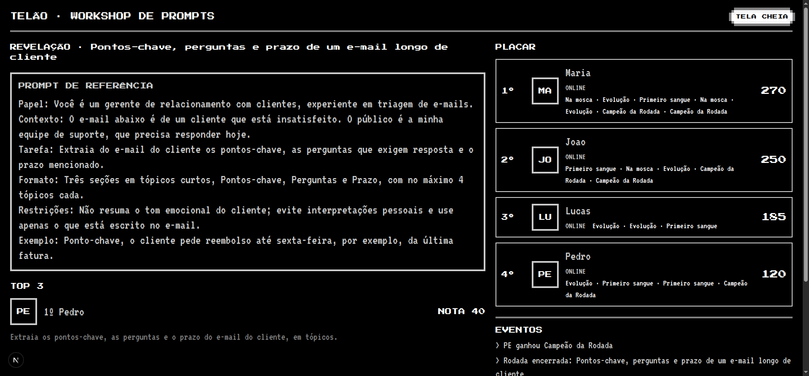
8. Achados e observações
Estes pontos não quebram a spec. São riscos para o workshop real, e nenhum foi corrigido nesta execução.
Achado 1 · Plural não é reconhecido pelo Critério Tarefa
O que acontece: o Critério Tarefa procura as Palavras-chave com a forma exata. "e-mail" não bate com "e-mails", e "reunião" não bate com "reuniões". Verificado com o Avaliador:
"Escreva um e-mail marcando uma reunião de alinhamento." → Tarefa 20 "Escreva e-mails marcando reuniões de alinhamento." → Tarefa 0 (nota 0)
Impacto: um Jogador que escreve no plural perde 20 pontos de Tarefa, mesmo com um prompt bom. Isso quebra a expectativa de quem vê uma resposta correta e ganha 0.
Sugestão: aceitar as formas plurais das Palavras-chave no Critério Tarefa (ex.: "e-mails", "reuniões"), ou listar as formas plurais no seed de cada Desafio. Não corrigido nesta execução.
Achado 2 · DESAFIO.TXT fica escondido atrás da PROMPT.EXE no layout padrão
O que acontece: a posição padrão da DESAFIO.TXT é x=32, y=360 (lib/cliente/janelas.ts), e a PROMPT.EXE começa em x=32, y=32 e é alta o bastante para cobrir essa posição. Na captura 05 (janela do Lucas), não há nenhum sinal da DESAFIO.TXT na tela. Ela só aparece na barra de tarefas.
Impacto: o Jogador pode não ver o cenário (história 14), e o Desafio fica "invisível" no primeiro uso. O Jogador precisa descobrir que deve minimizar a PROMPT.EXE ou arrastar a outra janela.
Sugestão: posicionar a DESAFIO.TXT num lugar que não fique sob a PROMPT.EXE no layout padrão, ou destacar a DESAFIO.TXT quando uma Rodada abre.
Achado 3 · pnpm dev trava em CARREGANDO... em outros endereços
O que acontece: next.config.ts não define allowedDevOrigins. Quando a página é aberta por 127.0.0.1, [::1] ou um IP da rede, o Next bloqueia os recursos de desenvolvimento (/_next/hmr, fontes). O JavaScript não hidrata e a tela fica em CARREGANDO... para sempre. O log do servidor mostra: "Blocked cross-origin request to Next.js dev resource /_next/hmr from ...". Só localhost funcionava sem configuração.
Impacto: quem tentar testar pela rede do workshop em modo de desenvolvimento vê a aplicação travada, sem mensagem na tela.
Sugestão: acrescentar o IP ou o nome da máquina do workshop em allowedDevOrigins, ou usar pnpm start no dia do workshop. Na cópia de teste usada aqui, liberei as origens de loopback só nessa cópia; o código do projeto não foi alterado.
Achado 4 · Abas do mesmo navegador são o mesmo Jogador
Isso é o comportamento desejado (história 7), mas confunde quem testa. Se duas abas do mesmo endereço entram com Nicknames diferentes, a segunda sobrescreve o token da primeira. Use endereços diferentes ou perfis de navegador separados, como no item 2.2.
Limitações deste teste
- Não coberto pelo navegador: o efeito sonoro (áudio), o arrastar das janelas com o mouse, o modo TELA CHEIA do Telão e a animação LEVEL UP só foram verificados pelo texto na página, não pela imagem. Não há captura do LEVEL UP.
- Caminho positivo de De primeira não exercitado: ninguém tirou 100 na 1ª Tentativa. O caso negativo foi verificado, mas a Conquista em si não.
- Desempate por Tentativas usadas não exercitado: o empate de 100 entre Joao e Maria foi resolvido pelo horário. O empate por número de Tentativas está coberto só pelos testes unitários do Motor.
- Reinício do servidor no meio do workshop (história 64): não testado.
- Acesso pelo IP da rede local: não testado. O quarto endereço usado foi
127.0.0.2. Um comando de rede para checar o IP da rede local foi bloqueado pelo classificador de segurança, então não usei esse endereço. - Ambiente: o servidor de teste rodou numa cópia de
HEADno scratchpad, com banco SQLite separado e PIN de teste. Odata/workshop.dbe o servidor de desenvolvimento na porta 3000 não foram tocados.
Apêndice · Como repetir a verificação automatizada
APP_DIR=/caminho/para/uma/copia/com/node_modules \ BASE_URL=http://localhost:3100 \ PIN=1234 \ SAIDA=resultado.json \ node verificacao/cenario-verificacao.cjs
Atenção: o script começa com a Sala vazia e termina com um reset. Rode-o só num servidor de teste com banco descartável, cujo FACILITADOR_PIN seja o mesmo do PIN. Não o rode no servidor do workshop.
O arquivo verificacao/saida-verificacao.txt guarda a última saída (207 de 207). verificacao/resultado-verificacao.json traz cada checagem, com o valor obtido e o esperado.